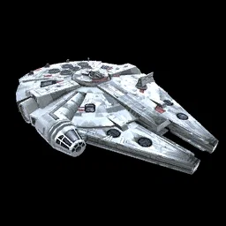
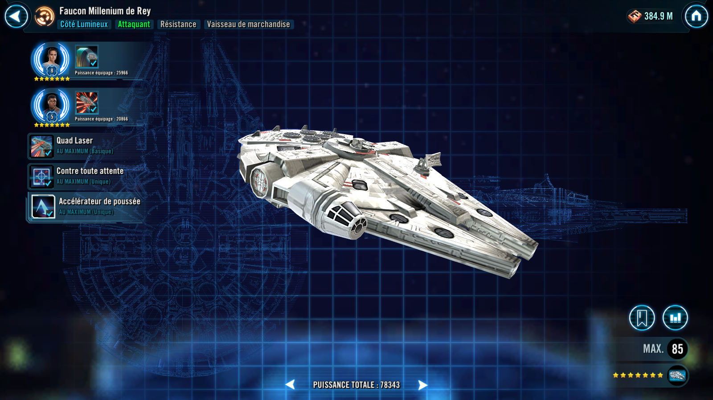
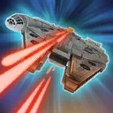
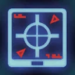

Rey's Millennium Falcon
Daring Resistance freighter that can turn the tide by sacrificing buffs

Daring Resistance freighter that can turn the tide by sacrificing buffs

The Falcon gains Protection Up (50%) for 2 turns and gains 3 stacks of the Thrust Reversal unique buff (can't be copied, dispelled, or prevented).
Thrust Reversal: +100% Counter Chance. Whenever the Falcon uses its basic attack, 1 stack is consumed to gain 50% Turn Meter.
Dispel all buffs on the Falcon and deal Physical damage to all enemies. This attack deals +30% bonus damage for each buff dispelled.

Deal Physical damage to target enemy, with a 75% chance to hit them a second time, plus an additional hit if the Falcon is buffed. Hits after the first deal 75% less damage.
Target Lock: This attack scores an additional hit

The Falcon gains 10% Turn Meter and 10% Offense (stacking) whenever it is damaged. If it is buffed when it is attacked, it also inflicts Target Lock on its attacker, which can't be Resisted. Additionally, while the Falcon has Thrust Reversal it has +100% Defense, and +15% Evasion while it doesn't.
Enter Battle : The Falcon gains 3 stacks of Thrust Reversal.
Thrust Reversal: +100% Counter Chance. Whenever the Falcon uses its basic attack, 1 stack is consumed to gain 50% Turn Meter